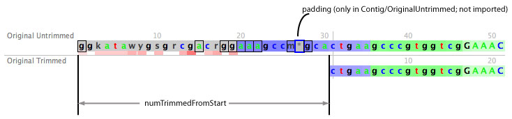
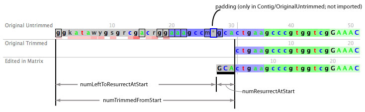
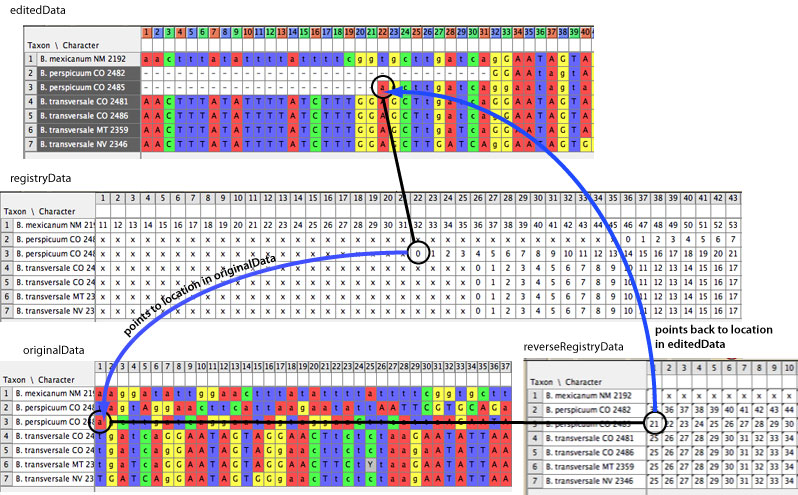

The most complex part of Chromaseq is the bookkeeping involved in making sure that all of the bases in the different components are registered properly. For example, we need to know that this particular peak corresponds to this particular base call in the Phred file which corresponds to this base in the Phrap contig which corresponds to this particular base on screen in the trimmed sequence which corresponds to this particular base in the quality score matrix which corresponds to this particular base in the main editable matrix.
These components exist as two linked clusters of sequences: the Phred/Phrap Cluster and the Mesquite Matrix Cluster. The Phred/Phrap Cluster contains the AceFile, contigs, reads, original chromatograms, etc.; basically, all of the output from Phred and Phrap, as contained in the files (.phd, .ace, etc.) in the directory that Phred and Phrap processed. The Mesquite Matrix Cluster contains the original matrix, the quality data matrix, and the edited matrix.
There are four mapping systems that coordinate sequence registration within and between these clusters:
Phred makes base calls, and stores these in the .phd and .poly files that it creates. Phrap then assembles these into contigs, and stores the information about the contigs, source bases, read bases, etc. in the .ace file. The contig in the Ace file is untrimmed, and contains only hard base calls. E.g., in one particular sequence (it happens to be 28S for Bembidion mexicanum DNA2192), the start of Phrap's contig is:
gggataacgggacgacaggaaagccc*gCaCTGAAGCCCGTGGTCGGAAAC
Mesquite reads all this in, and looks into various files to alter the base calls as need, converting some to lower case based on quality scores, and converting some to ambiguity codes if there are multiple peaks of the appropriate relative heights. In this example, the Chromaseq-modified contig starts as follows:
ggkatawygsgrcgacrggaaagccm*gcactgaagcccgtggtcgGAAAC
Note that both of these contigs have padding in them, as indicated by the *. Chromaseq saves a modified Ace file with this new contig in it, as well as various other modifications, in the m.ace file. This seuqence is displayed in the chromatogram viewer under the label "Original Untrimmed".
On importing into the matrix, Chromaseq trims the low quality ends of this sequence according to the rules the user specifies, yielding the "Original Trimmed" sequence. The amount trimmed from the is numTrimmedFromStart, and is stored in Contig and in ContigMapper. The amount trimmed from the end (which is less important for the bookkeeping) is numTrimmedFromEnd. These values include any pads that are trimmed. The start of the Bembidion mexicanum DNA2192 is shown there in the chromatogram viewer:

In addition to trimming the ends, Chromaseq also strips out any pads, and so the Original Trimmed sequence differs from the Original Untrimmed both in having shorter ends (sometimes) and in being without pads.
For example, here is a piece in the middle of that same sequence, showing the pad present in the Original Untrimmed contig and the Original Trimmed Sequence
This Original Trimmed sequence is imported into the originalData and editedData DNA matrices in Mesquite; on import they should be identical. But then the user can modify the edited sequence in many ways, and the originalData and editedData matrices can diverge, although they will be linked together by the registryData and reverseRegistryData matrices. The originalData matrix should never be modified.
One change the user might make is to resurrect some bases from the start of the sequence:

In all of this, perhaps the key numbering scheme that is vital for all the registration is the number of the Original Untrimmed sequence - that is, the original Contig from the Ace file, as represented within Chromaseq by the Contig object. This numbering scheme is shown at the top of the Original Untrimmed sequence in the chromatogram viewer: it starts at 0, and extends through the region that was trimmed in the later sequences, and through to the end of the contig. The last base in this contig is contig.getNumBases()-1.
A base position value in this numbering scheme is called the contigBase. In some parts of the code this contigBase might still be called consensusBase.
In contrast, the Original Trimmed sequence is shorter than this; it is shorter by numTrimmedAtStart+numTrimmedAtEnd+number.of.pads.between.trimmed.ends
The Edited in Matrix sequence can have pieces removed from it, if you turn those base calls to gaps:

Or it can have added bases:

In the chromatogram viewer, there is another counter, which is which display base one is at. This is called the universalBase. The number of universalBases in the entire view is the sum of:
In some parts of the code this universalBase might still called overallBase or, more rarely, displayBase.
The registration information that connects these cells in these matrices one to another is managed primarily in ChromaseqUtil, and is stored in the following matrices:

registryData is stored in the file, and must be maintained. It is linked to the editedData, and so as that changes with alignment, etc., the registryData also gets changed appropriately.
reverseRegistryData is not stored in the file; it is inferred on read-in/creation of registryData, and also needs to be updates on the fly.
The bulk of the code for managing this is contained in the following places: